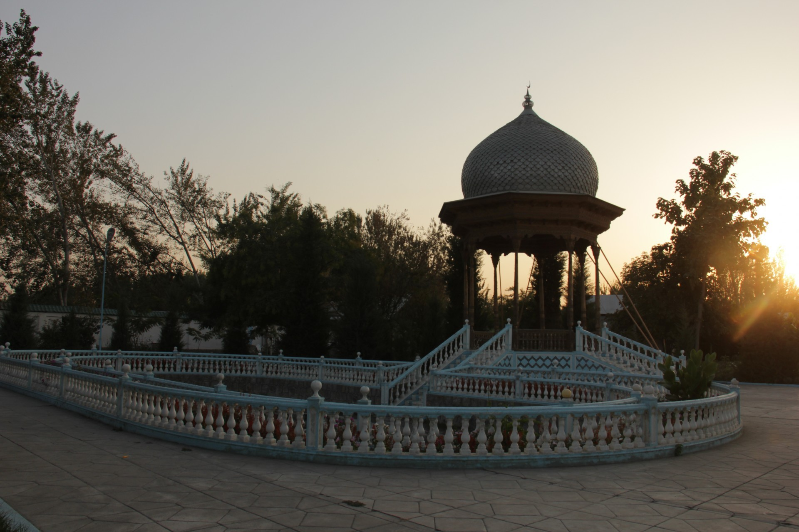
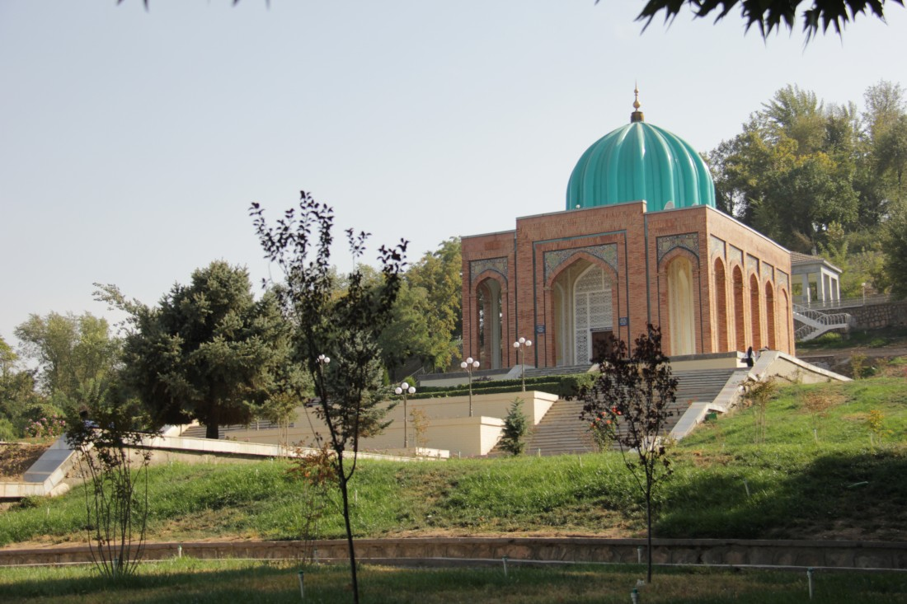
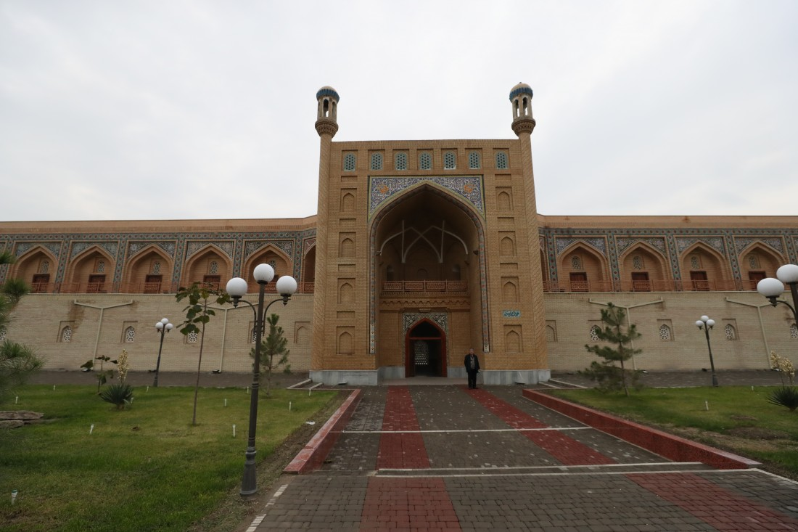

Андижан - Город Бабура
Климат
Андижанская погода мало чем отличается от погоды во всей долине. Мягкая зима, во время которой минусовая температура не на столько частое явление, изредка может меняться резким похолоданием. На такие моменты всегда нужно иметь в запасе теплые вещи. Благо, это происходит не часто и если произойдет, то максимум на пару дней.
Подарки и сувениры
Ферганская долина славится своими ремесленническими мастерскими. И это не просто так! Самыми частыми подарками из Андижана являются керамические изделия, поделки из дерева и конечно же произведения ткацкого искусства – Хан Атлас, Адрас и Шелк. Если потратить не много драгоценного времени и съездить в город Шахрихан, который находится не далеко от Андижана, то Вы попадется в рай для любителя ножей. Все ножи там делают исключительно вручную, а качество их изготовления славится по всей стране. Цены варьируются от материала, способа закалки и имени мастера. При покупке ножей и прочих сувенирных режущих произведений местного искусства не забудьте взять у мастера сертификат подтверждающий, что это сувенир.
Кухня
Можно много рассказывать о том, как в разных регионах Узбекистана божественно готовят мясо, но мы сейчас отойдем от этой темы и расскажем о тех продуктах, которые растут на плодотворной земле Ферганской долины. Конечно же речь пойдет об огромном разнообразии фруктов! По легенде если взять обычную палку и воткнуть ее в землю, то она приживётся и обязательно начнет плодоносить! Уже на подъезде к городу можно увидеть множество садов с фруктовыми деревьями, чьи ветки ломятся от спелых фруктов. Купить их можно прям вдоль дороги и попробовать их прям на том же месте. Это непередаваемое чувство, когда в жаркий день откусываешь прохладный нектарин (местные называют их лысые персики), а его сок стекает по щеке. Еще тут продается один очень интересный напиток… Это сок черного тутовника! Говорят, если пить его три раза в день, то можно жить вечно! Нельзя также не выделить сухофрукты. Курага, финики, чернослив и даже белый тутовник, который можно добавлять в чай и есть как семечки. Среди всего этого разнообразия можно найти горные лечебные травы, такие как чабрец, райхон итд. P.S. Плов тоже нужно обязательно попробовать! Его делают из специального риса сорта девзира, который идеально подходит для плова из-за своего необычного вкуса.

История
На юго-востоке Ферганской долины раскинулся еще один древний город нашей Республики. Это Андижан. Древним его можно считать по праву так, как археологи установили, что на территории города жили люди еще 2500 лет назад. В далеком VI веке до н.э., когда Ахемениды завоевали Центральную Азию, Андижан сумел сохранить независимость и это поспособствовало созданию государства Давань. А во время переходного периода, когда люди оставляли в прошлом бронзовые орудия труда и переходили на железо, Давань подвергся нападению со стороны Китайской империи. Поводом этого нападения послужило желание импеатора У-ди захватить аргамаков, одной из старейших и очень ценных пород лошадей. Но Китай с треском проиграл этот бой и последующий, кстати, тоже.
В IX веке город вошел в состав государства Саманидов и стал одним из основных городов Ферганской долины. В это время он упоминался как Андукан. Затем, в XIV веке, во времена правления Амира Темура город достигает пика развития науки, культуры и экономики. Также в Андижанской области, городе Ахсикент, родился Захириддин Мухаммад Бабур – знаменитый поэт и полководец, который уже в 11 лет стал правителем Андижана. Он является представителем династии Тимуридов и в последствии основатель империи Великих Моголов в Индии. Именно его прямой потомок, Шах-Джахан, построил одно из Чудес света – Тадж-Махал! В настоящее время Андижан является центром промышленности и машиностроения. В городе есть завод по выпуску легковых автомобилей и множество крупных производственных предприятий.